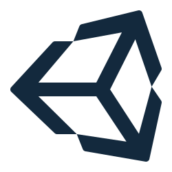
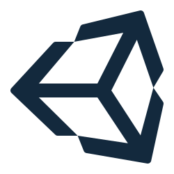

About Me
"As a seasoned full stack developer, I'm on a mission to craft digital experiences that transcend the ordinary. With a diverse skill set that spans both front-end and back-end development, I relish the art of bringing ideas to life in the digital realm. My journey in the world of web development has been marked by a relentless pursuit of excellence. I thrive on overcoming challenges, whether it's designing elegant user interfaces, optimizing server performance, or creating seamless database interactions. My passion for code is matched only by my commitment to user-centric design. I believe that technology should serve as a bridge, making complex processes simple and enjoyable for the end user. Throughout my career, I've had the privilege of working on a variety of projects, each presenting its unique set of opportunities and complexities. This journey has enriched me with invaluable experience and a deep understanding of the ever-evolving tech landscape. Beyond coding, I'm an avid learner and a firm believer in staying on the cutting edge of industry trends. My dedication to continuous growth is fueled by the excitement of staying ahead of the curve and finding innovative solutions to modern challenges.
Work
 

Contact
Rizandicoot123@gmail.com
Phone
07555555555
Discord
Rizandicoot123